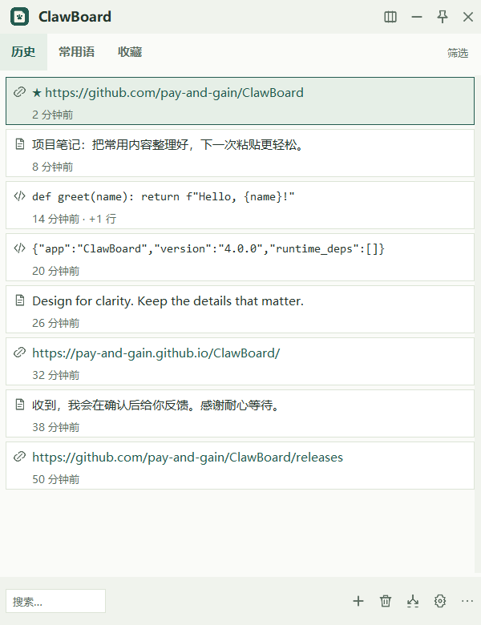
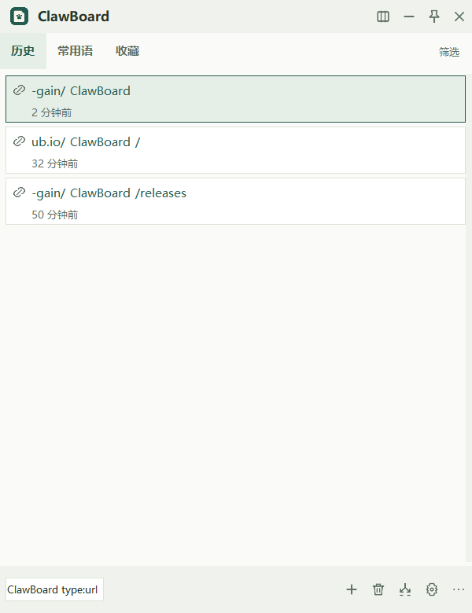
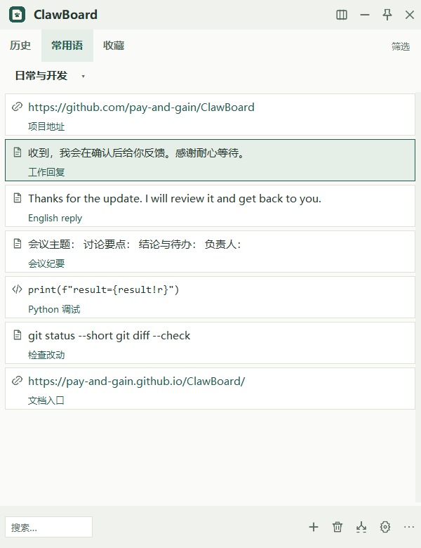
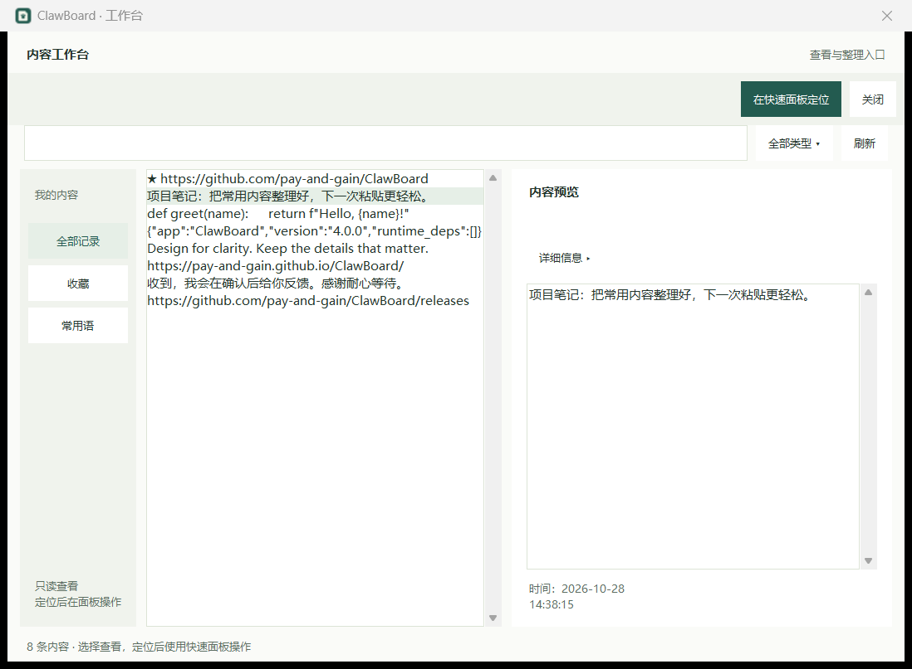
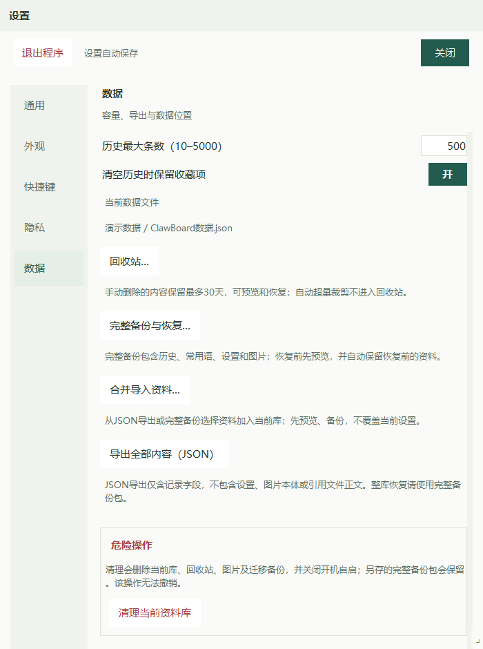
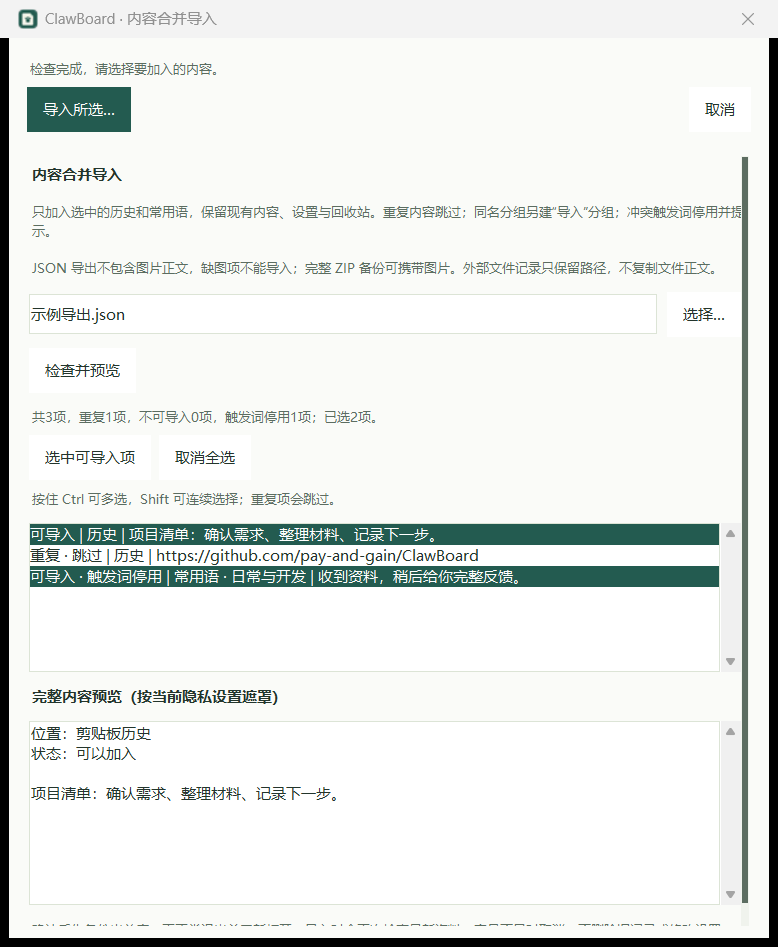

复制
在其他应用复制文字、图片或文件路径。
热键唤起，搜索，选择后粘贴。日常用一个小面板，需要时再打开完整预览、处理工具与资料管理。
无需安装 Python · 不要求账号 · 资料保存在本机

完整解压便携包，运行 ClawBoard.exe，再用一段示例文字试一下。
在其他应用复制文字、图片或文件路径。
回到输入位置，按 Ctrl+Shift+V，搜索需要的记录。
单击记录或按 Enter。目标拒绝自动输入时，在目标框手动 Ctrl+V。
保留已有能力，收拢低频入口。主要保存和确认操作放在顶部，长内容在下面滚动。
关键词、中文拼音、类型、时间与收藏筛选。来源和大小默认隐藏，内容更清楚。
分组保存常用语；用键盘选择、快捷粘贴，或打开完整工作台查看。
拆词、文本变换及多格式导出集中在需要的位置，原有快捷键保留。
所有截图均使用合成资料。点击图片可查看原图；详细指南还包含备份、回收站、拆词和变换窗口。





都在“设置 → 数据”中，三种操作的结果各不相同。
| 你的目的 | 选择的操作 | 结果 |
|---|---|---|
| 留副本，或回到整份库 | 完整备份与恢复 | 历史、常用语、回收站、设置与引用图片打成ZIP；恢复先预览、备份当前库，再替换。 |
| 挑一些旧资料加入 | 合并导入资料 | 从JSON或ZIP选择内容；重复跳过、同名分组另建、冲突触发词停用，保留当前内容和设置。 |
| 找回误删记录 | 回收站 | 手动删除最多保留30天、5000条；满时拒绝新删除，自动历史裁剪不进入回收站。 |
JSON不携带图片正文，缺图条目不能导入；导入容量不足会取消。外部文件记录只保存路径，不复制原文件正文。
正常退出后替换原位置的exe，保留ClawBoard数据.json与images文件夹。目录不可写时资料回退到系统用户资料目录，在托盘“关于”可确认实际位置。
资料、图片、导出与备份保存原文，敏感识别也有边界。采集、搜索与变换在本机进行；默认更新检查访问GitHub，可在设置关闭。
触发词仅支持独立标准US键盘；微软拼音的“中”“英”模式仍暂停展开，复制、搜索和点击常用语正常可用。管理员或未知权限目标请在复制成功后手动Ctrl+V。
具体构建的测试与未覆盖场景，见 Windows验证记录。不把截图当成全部交互、长期运行或完整无障碍验证。